ドライバーさんに優しい 注文方法
いま、物流の現場は深刻な人手不足に直面しています。
注文するときにほんの少し気をつけるだけで、再配達や慌ただしい配送を減らし、日々奮闘するドライバーさんの負担を大きく軽くすることができます。
再配達にならないように、置き配等の対面受け取り方法以外を選ぶ
お届け日を余裕を持った日付にする
時間指定でしっかり受け取る
ご利用中のネットショップを選んで、やさしい注文方法をご確認ください。
Amazon 置き配・お届け日の指定方法
カートに商品を入れて購入手続きへ進みます。「注文を確定する」直前の画面で、置き配とお届け日を以下の手順で設定しましょう。
「配送指示（置き配含む）」を押す
注文確定画面のお届け先情報の下にある、赤い破線枠の「配送指示（置き配含む）」を押します。
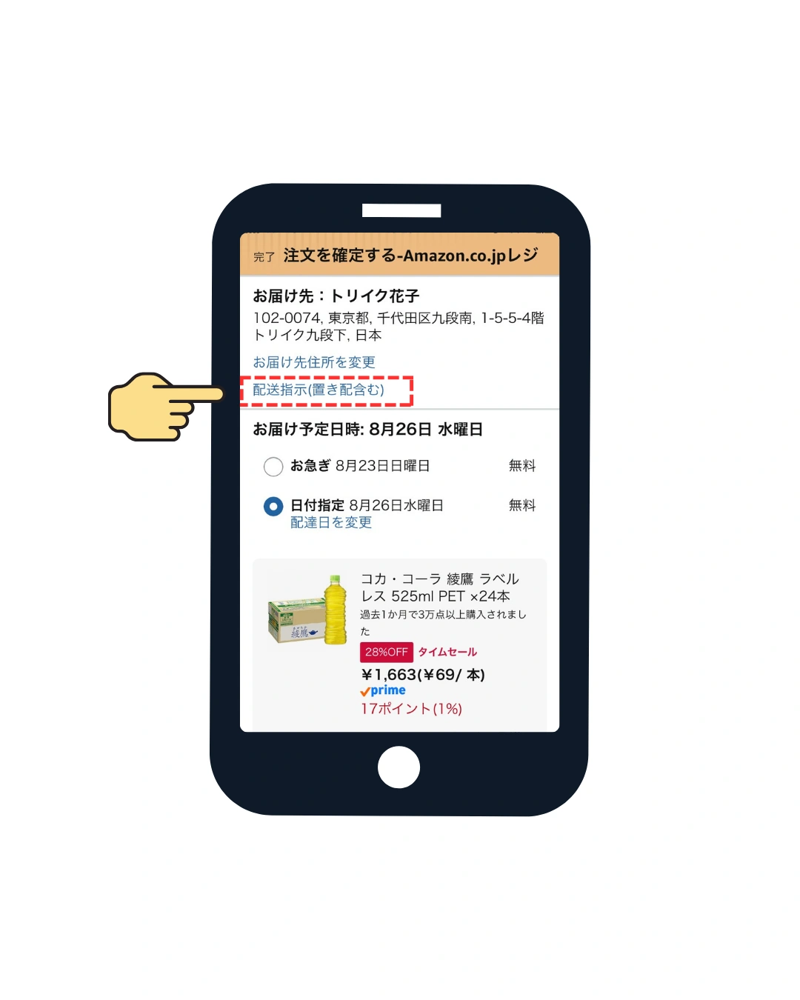
置き配指定で受け取り場所を選ぶ
「置き配指定」の項目が開いたら、赤い破線枠の選択肢の中から「玄関」や「宅配ボックス」など、ご自宅で対面せずに受け取れる場所を選びます。置き配を指定するだけで、再配達の手間を大きく減らせます。
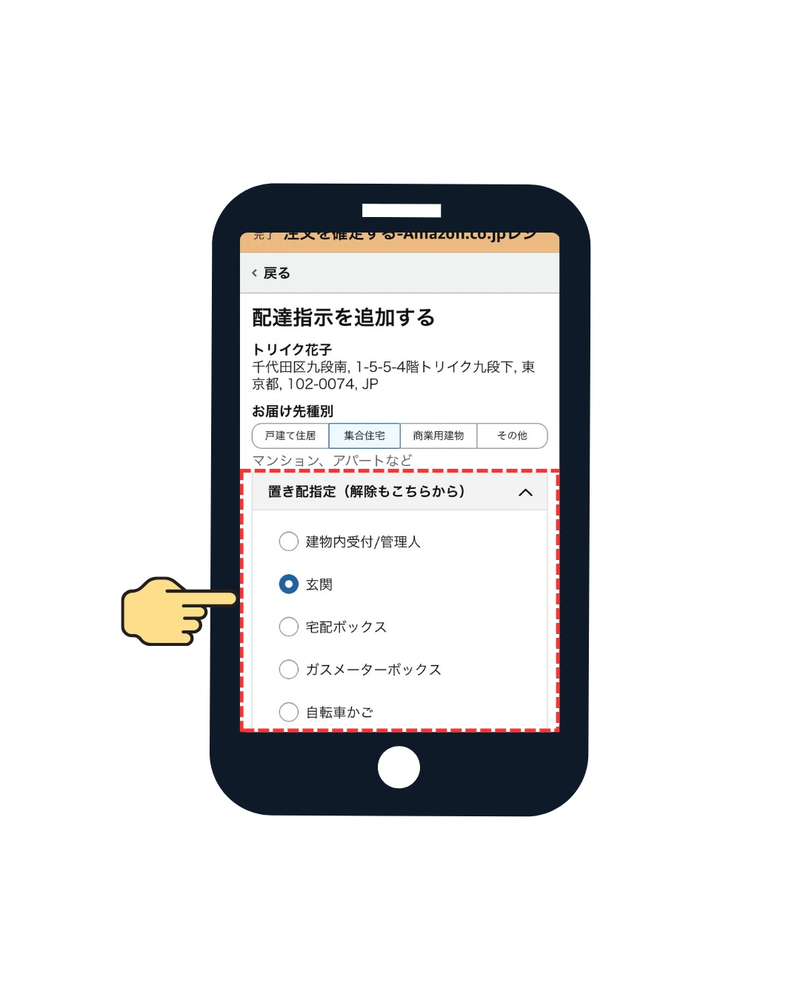
お届け予定日時で「日付指定」を選ぶ
お届け予定日時の選択肢が表示されたら、赤い破線枠の「日付指定」を選びます。「お急ぎ」を選ばずに日付指定にすることで、ドライバーさんが無理のないペースで配達しやすくなります。
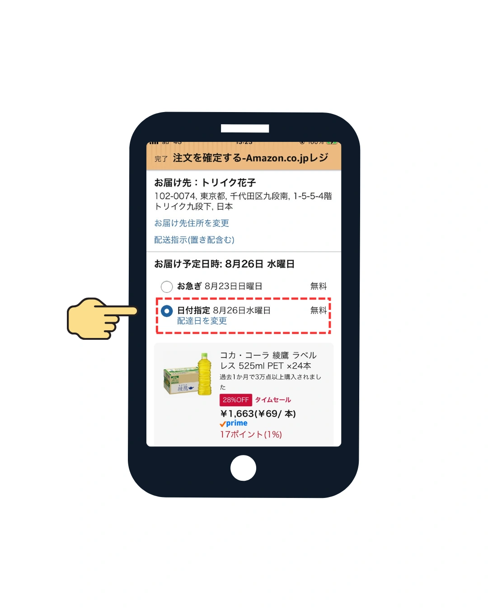
確実に在宅できる、余裕のある日付を選ぶ
カレンダーが表示されたら、赤い破線枠の中から数日〜1週間ほど先の、確実に受け取れる日付を選びましょう。「ゆっくり配送」と同じ考え方で、急がず余裕を持たせることが再配達防止につながります。
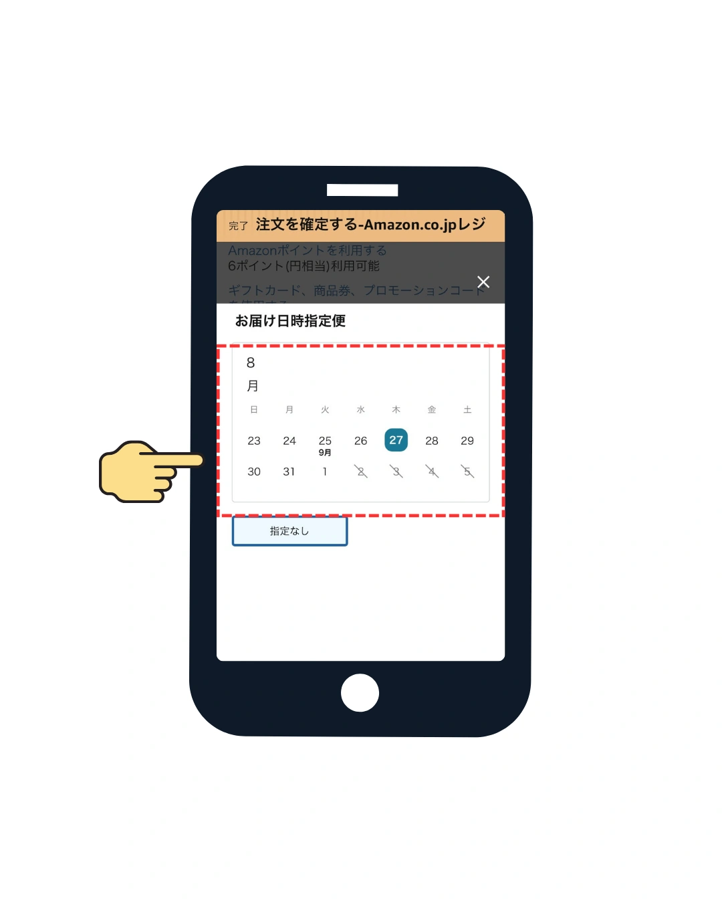
楽天市場 置き配・お届け日時の指定方法
カートから購入手続きへ進み、「注文内容の確認」画面まで進みます。ここで、お届け日時と置き配指定を以下の手順で設定しましょう。
「お届け日時」の【変更】を押す
注文内容の確認画面で、お届け日時の右側にある赤い破線枠の「変更」を押します。
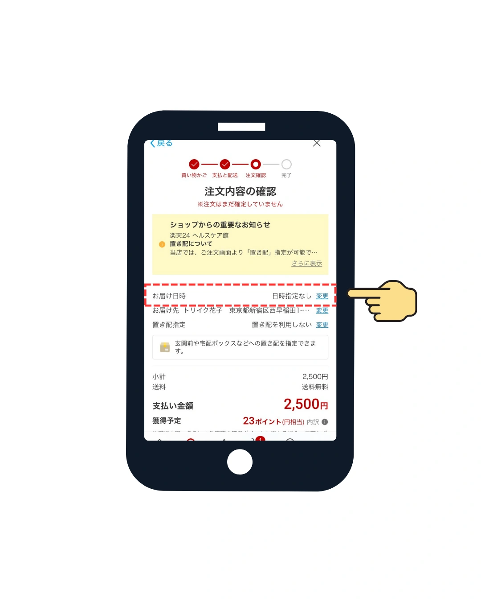
余裕のある日付と時間帯を指定する
お届け日時を指定する画面が開いたら、赤い破線枠の「日付指定」を選び、確実に受け取れる数日先の日付と時間帯を選択して「決定する」を押します。日付・時間を明確にすることで、ドライバーさんは一度で確実にお届けでき、再配達を防げます。
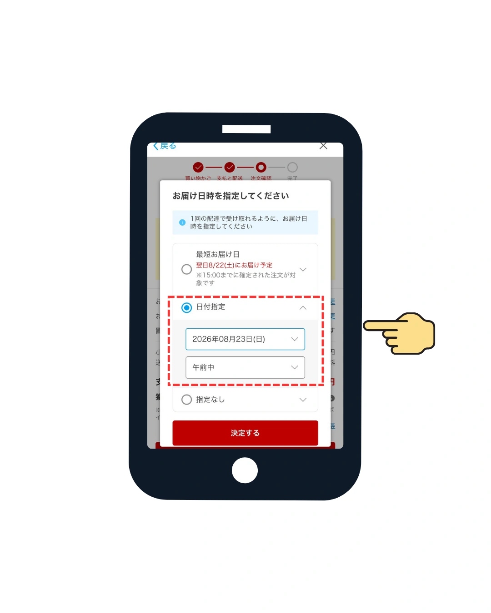
「置き配指定」の【変更】を押す
確認画面に戻ったら、置き配指定の右側にある赤い破線枠の「変更」を押します。
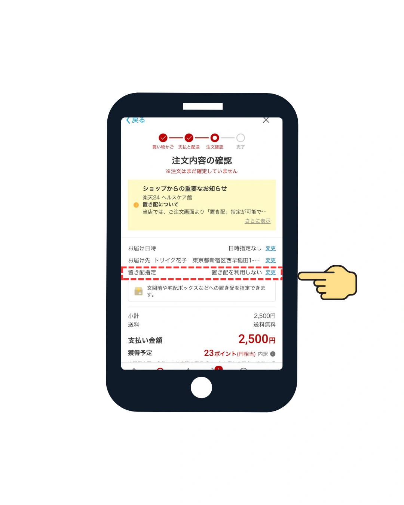
置き配指定で受け取り場所を選ぶ
置き配指定のプルダウンから、赤い破線枠の「玄関前」など、ご自宅で対面せずに受け取れる場所を選びます。置き配を指定するだけで、再配達の手間を大きく減らせます。
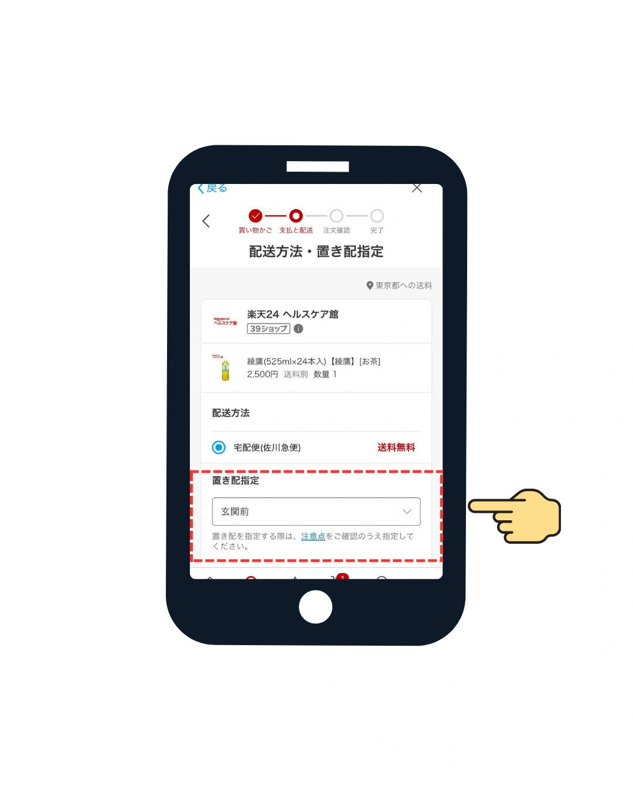
Qoo10 置き配希望の伝え方
カートでお届け先を確認する
カート画面で、赤い破線枠のお届け先表示（「〇〇様へ配送」）を押して、お届け先情報の編集画面に進みます。
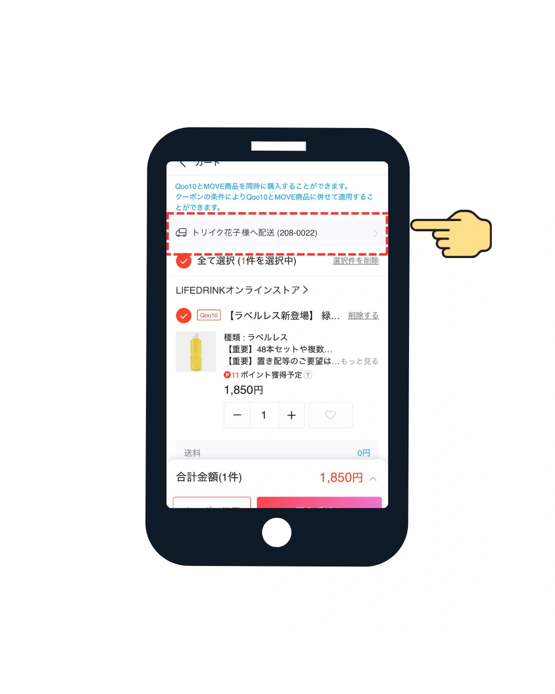
住所欄の続きに置き配希望を手入力する
お届け先の編集画面で、住所を入力したあとに続けて、赤い破線枠の欄へ「玄関前置き配達」など置き配を希望する旨を直接入力します。専用の置き配設定がない分、ここでしっかり伝えることが大切です。
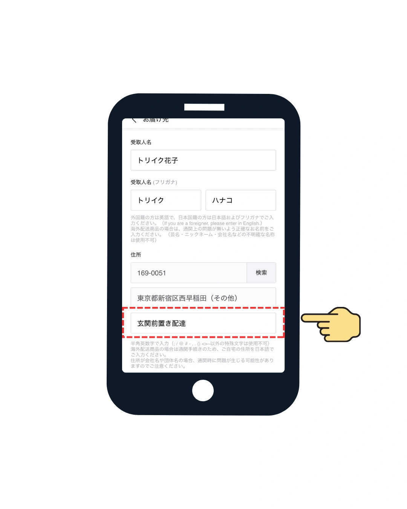
入力内容を最終確認する
注文画面に戻ったら、赤い破線枠のお届け先情報に、入力した置き配希望の文言（例：「玄関前置き配達」）が正しく反映されているか確認してから注文を確定します。
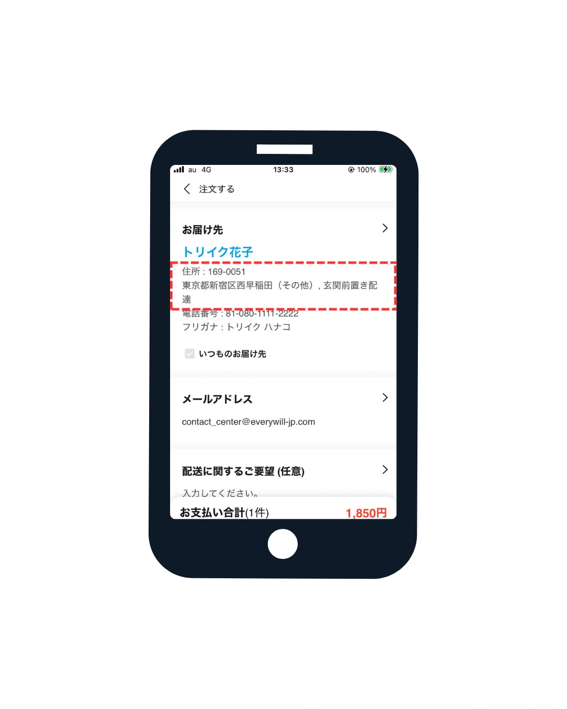
⚠️ Qoo10には置き配専用の選択肢はありません
そのため、住所欄の末尾に置き配希望の文言を手入力して伝える必要があります。
Yahoo!ショッピング 確実に受け取れる日時の指定方法
ストアからの確認画面で内容を確認する
購入手続き中に表示される「ストアからの確認」画面では、お届け日を指定しない場合は受付順に早く発送される旨が案内されます。急ぎでない場合は、あえて日付を指定して確実に在宅できる日を選ぶのがおすすめです。内容を確認したら赤い破線枠の「ご注文手続きへ」を押します。
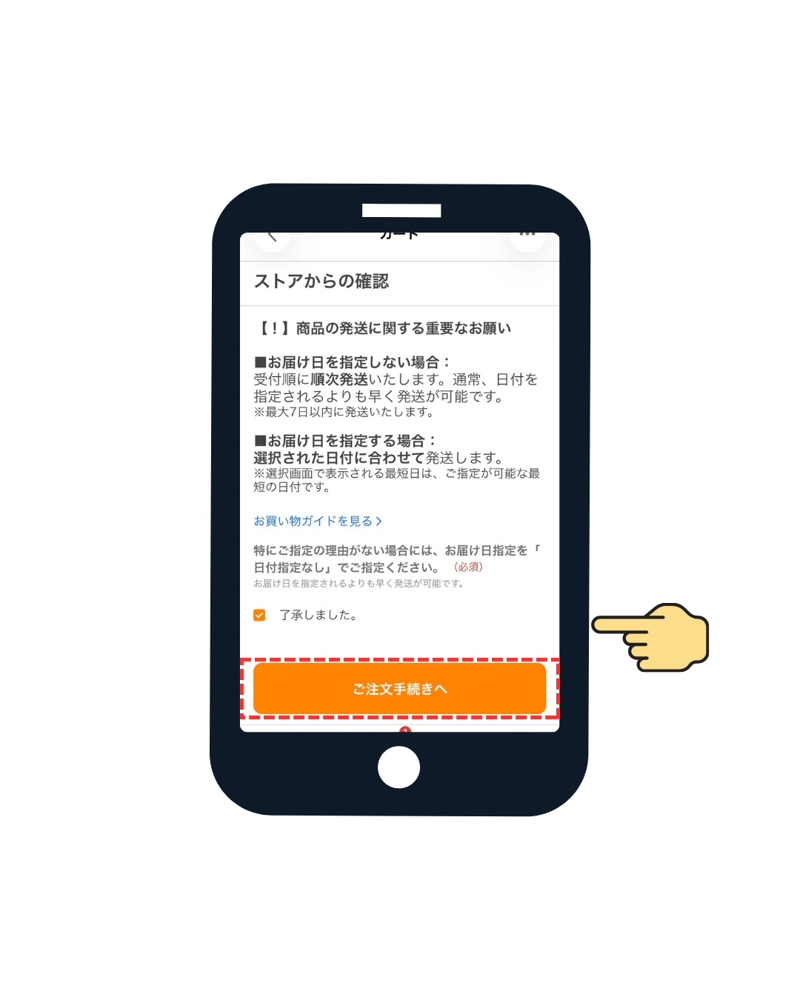
お届け希望日時で日付と時間帯を指定する
お届け情報の画面で、赤い破線枠の中から確実に受け取れる日付を選び、さらに時間帯（例：09:00-12:00）まで指定します。日時を明確にすることで、置き配ができないYahoo!ショッピングでも一度で確実にお届けでき、再配達を防げます。
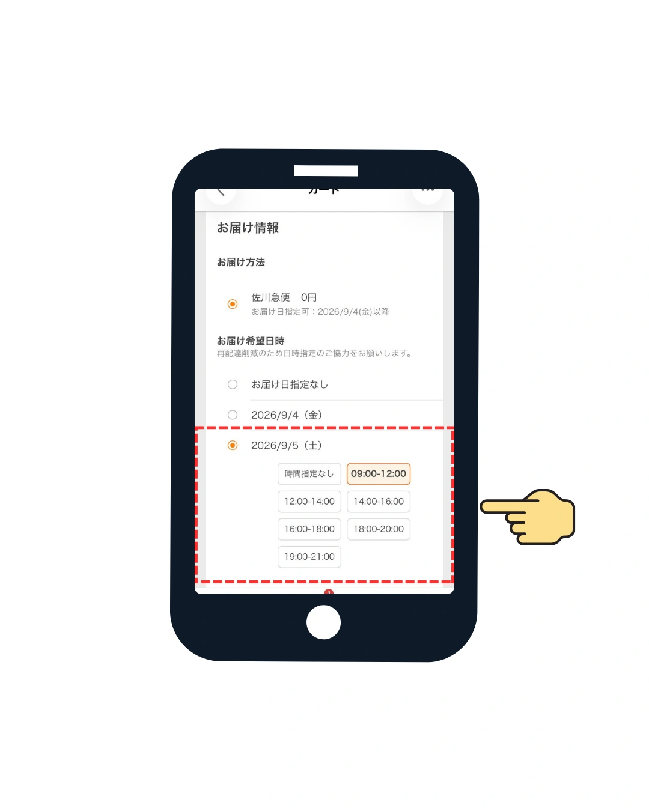
⚠️ Yahoo!ショッピングには置き配の指定はありません
その代わり、日時を具体的に指定して確実に受け取ることが、ドライバーさんの再配達の負担を減らす一番のポイントです。
その他ECサイト ドライバーさんに優しい注文のポイント
サイトによって画面表示は異なりますが、「ゆっくり配送（余裕のある日付）」と「置き配」を、できる限り選択することを心がけましょう。
お届け日は「ゆっくり配送」など余裕のある設定にする
お届け日・お支払い方法の選択画面で、赤い破線枠の「ゆっくり配送」のように、通常配送よりも数日先の設定を選びます。急がず日付に余裕を持たせることで、ドライバーさんが無理のないペースで配達できます。
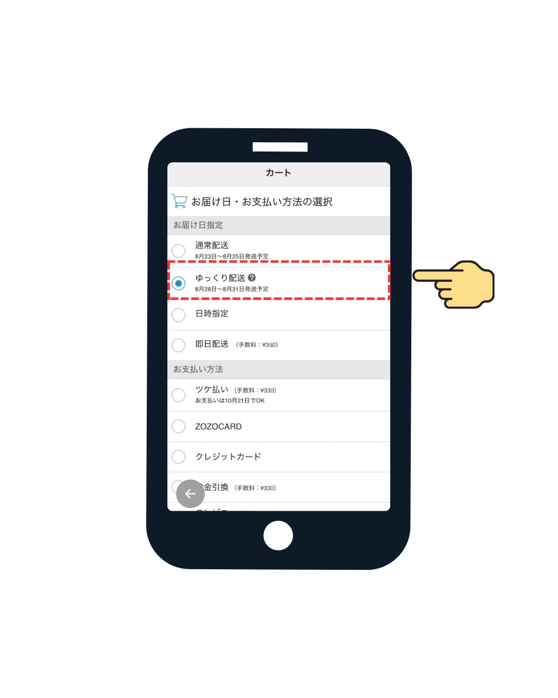
受取り方法で「置き配」を選択する
受取り方法の変更画面で、赤い破線枠の中から「あんしん置き配」や「玄関ドア前」など、対面せずに受け取れる置き配の選択肢を選びます。
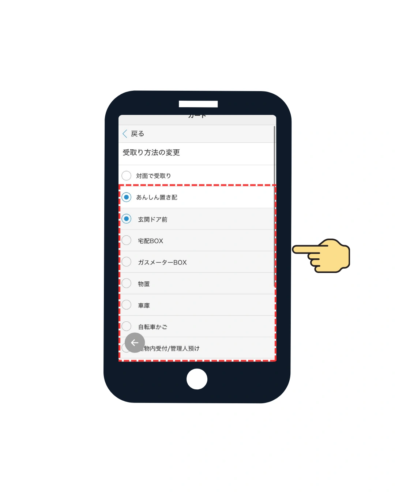
共通して押さえていただきたいポイント
- お届け日は、指定できる中でできるだけ先の日付（ゆっくり配送）を選ぶ
- 置き配の指定がある場合は、玄関前や宅配ボックスなど「置き配」を積極的に選ぶ
- 時間帯を指定できる場合は、確実に在宅できる時間帯を選んで一度で受け取れるようにする